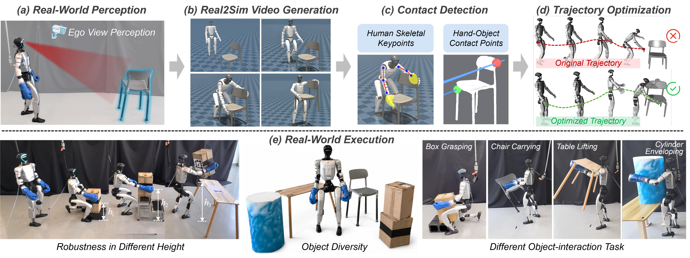

Humanoid-Object Interaction (HOI) is a fundamental capability for humanoid robots, yet it remains challenging due to the tight coupling between dynamic balance and stable interaction with diverse objects. Existing methods often require time-consuming task-specific policy training or rely on rigid trajectory replay, which limits their ability to accommodate novel interaction scenarios. In this work, we present GenHOI, a simple yet effective framework that enables humanoid robots to perform diverse object-interaction tasks in a zero-shot manner by directly imitating a single generated video, without task-specific training or physical demonstration data. GenHOI first reconstructs the robot-object scene in simulation and renders a first-frame image, which, together with the language command, conditions the synthesis of a task-oriented interaction video. The generated video is then analyzed to identify interaction-relevant contact events and estimate hand-object contact regions, which are encoded as object-centric geometric constraints that convert visual interaction cues into physically grounded optimization priors. Guided by these priors, the reference motion recovered from the video is refined and smoothed to resolve the scale ambiguity inherent in 2D video generation, while adapting a single reference trajectory to unseen robot-object relative poses. The optimized trajectory is finally executed by a closed-loop tracking controller. We validate the proposed framework in extensive simulation and real-world experiments across diverse object-interaction tasks, including box grasping, asymmetric bimanual chair carrying, table lifting from below, and cylindrical-object enveloping.
Real-world experiments on the Unitree G1 humanoid robot, including interaction with diverse objects, generalization to out-of-distribution object positions, and representative failure cases.
Demonstrations of box grasping, asymmetric bimanual chair carrying, table lifting from below, and cylindrical-object enveloping.
Box Grasping
Asymmetric Bimanual Chair Carrying
Table Lifting from Below
Cylindrical-Object Enveloping
Continuous box grasping at varying object positions using a single reference trajectory, demonstrating generalization to out-of-distribution robot-object relative poses.
Continuous Box Grasping under OOD Positions
Representative failure cases from generated videos and real-world experiments.
Camera Viewpoint Drift
Object Morphology Hallucination
Unexpected Object Motion
Hand Contact Error
Root Tracking Error
Robot Overheating
Qualitative comparison of five methods across four object categories in simulation. Each row corresponds to a different baseline or ablation, and each column shows results on a different object. All objects are initialized 2.0 m away from the robot.
Chair
Table
Box
Cylinder
ExoActor
Chair
Table
Box
Cylinder
W/o Cont. Det.
Chair
Table
Box
Cylinder
W/o Inward Bias
Chair
Table
Box
Cylinder
W/o Traj. Smooth.
Chair
Table
Box
Cylinder
Ours
Chair
Table
Box
Cylinder